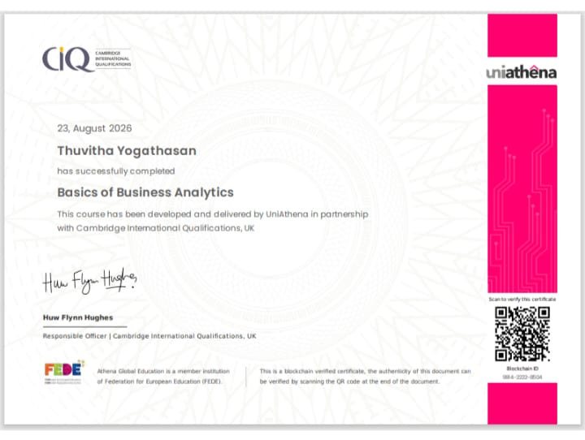
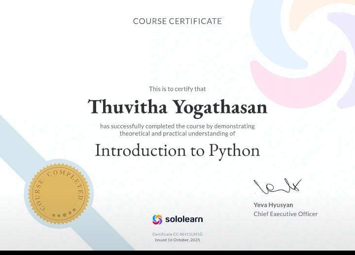
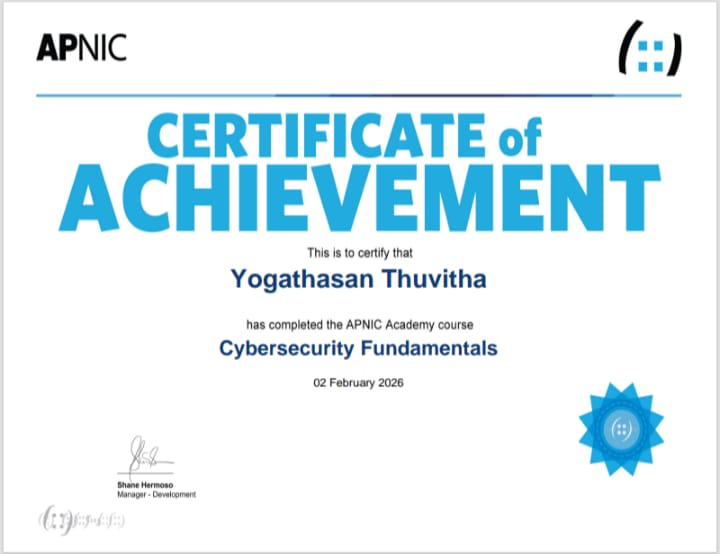
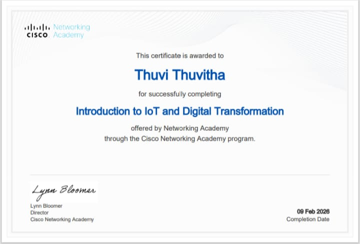
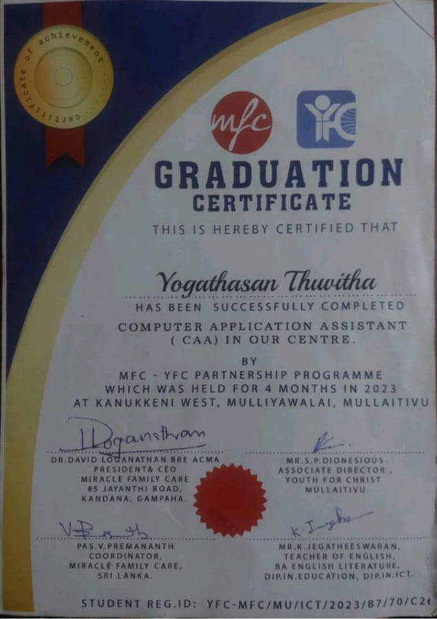

2022 — 2023
BSc (Hons) in
Business Information Systems
University of Sri Jayewardenepura
B
Business Information Systems · Sri Lanka
I’m Thuvitha Yogathasan — a motivated undergraduate building practical, data-informed solutions with curiosity and care.
THUVITHA YOGATHASAN · 2026
01 / ABOUT
I am reading for a BSc (Hons) in Business Information Systems, combining business knowledge with data, technology and digital solution development. I enjoy turning a question into a structured approach and a useful outcome.
02 / EDUCATION
2022 — 2023
University of Sri Jayewardenepura
Commerce Stream · B, B, B
3 A passes, 1 B pass, 4 C passes, 1 S pass
Professional working proficiency
03 / CAPABILITIES
SQL · Excel · Power BI · DAX
Web application development
Analysis · problem-solving · communication
04 / CERTIFICATIONS





05 / PROJECTS
Boarding Gigs — a web-based boarding management system.
An online bus booking system developed as a practical project.
Python · MySQL
“Seeking an internship to apply technical and business knowledge while gaining practical experience toward a career as a Business Analyst.”
04 / CONTACT